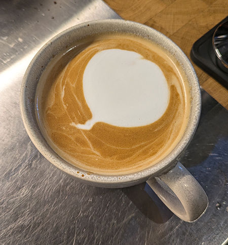
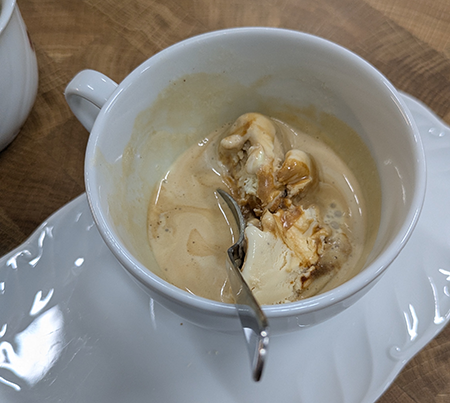

Decided to kind of timestamp my avarage day today, just for fun...
[8:00 AM] - My first alarm clock goes off, a reminder that I got work to do today and to mentally prepare to wake up.
[9:15 AM] - Finally got up after multiple alarm clocks go off. Getting ready with clothes, brushing my teeth, no breakfast, taking my laptop with me.
[9:35 AM] - Preparing everything necesarry for café to work properly. Met with my manager who was preparing a new kind of coffee drink to sell.

My first coffee of the day. Fat heart, looks kinda funny.
[10:40 AM] - Manager finishes preparing the new drink to sell—an ice cream coffee called "Affogato." Sweet and tasty, like an ice coffee.

[11:15 AM] - Served my first two customers (and maybe only customers). Two waffles and two double lattes.
[12:30 PM] - Got a bit of time for myself, decided to give the website an updated entry. Thinking about learning how to use Git with terminal only, but it's kinda scary. So far I have been using just the GUI version, because it's simpler.